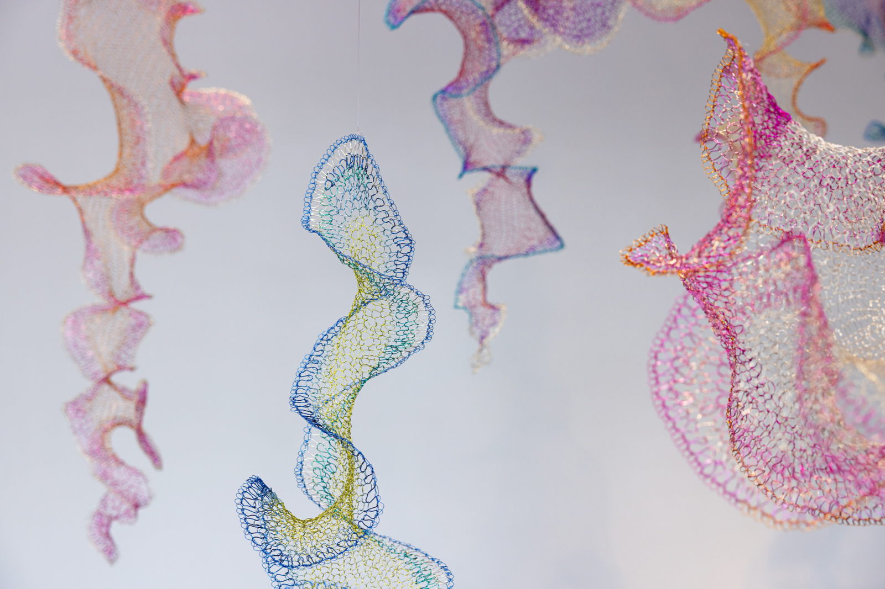
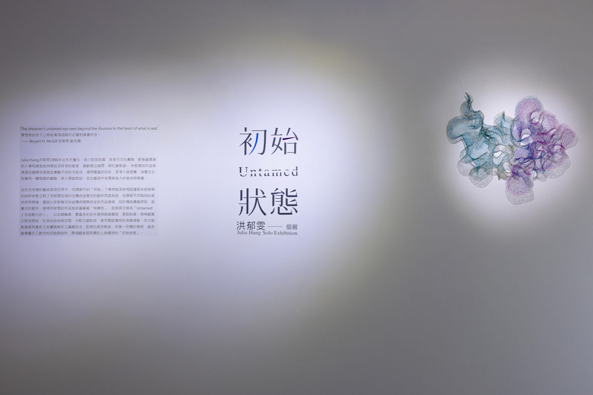
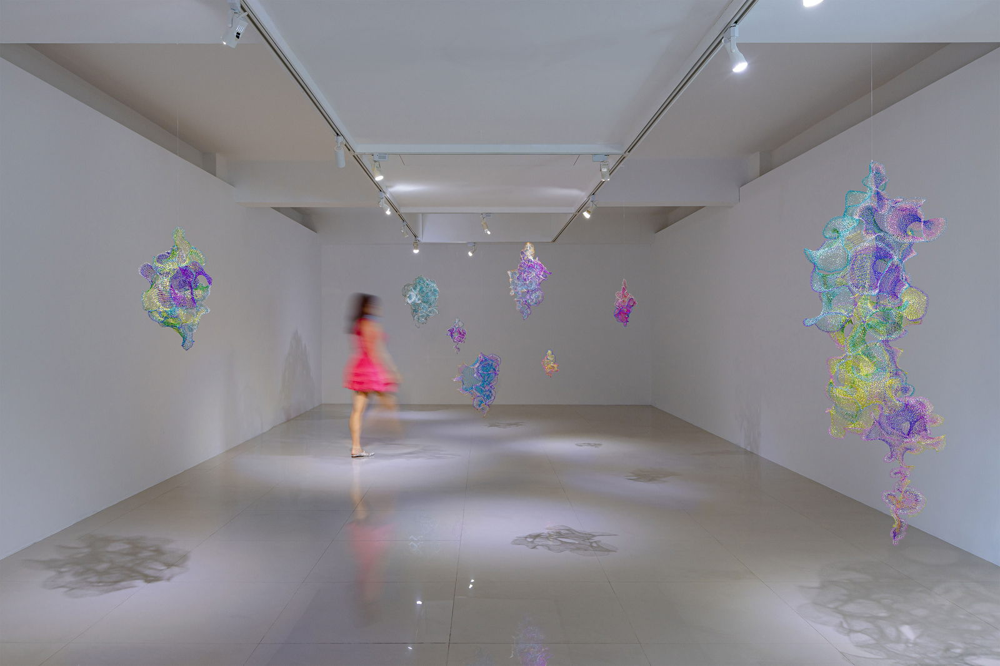
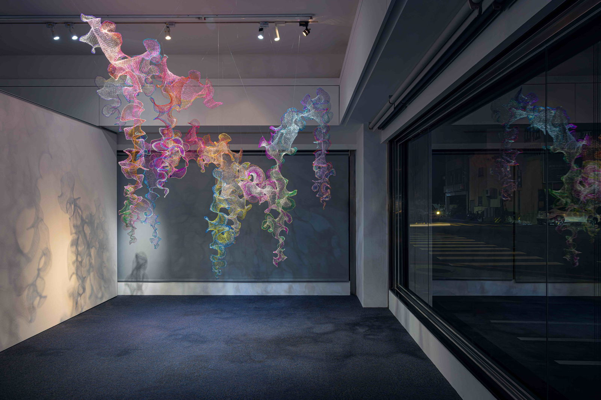
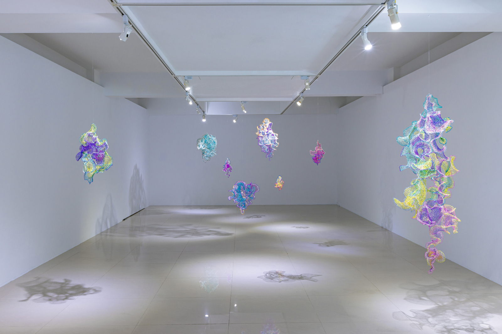
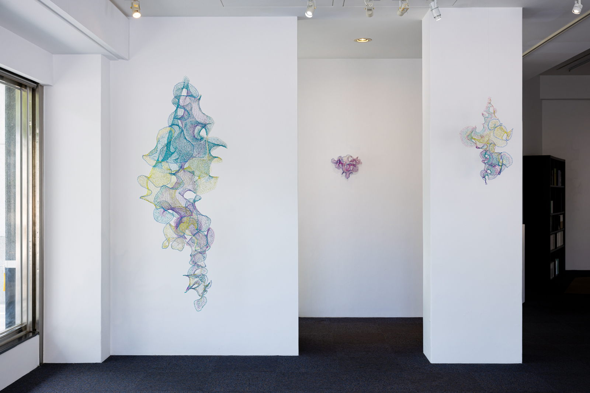

“The dreamer's untamed eye sees beyond the illusions to the heart of what is real.”──Bryant H. McGill, American thought leader and author
In the kaleidoscopic world of artistic expression, is there any such thing as a ‘creative origin’? And even if there is, can anything return to its pure, original form? These are the musings behind artist Julia Hung’s latest series Untamed: a new collection of her signature, handwoven, copper-wire constructions that leads us to contemplate where all people and things come from—our original state.
Untamed, as a series and solo exhibition, blends asymmetrical shapes and organic, whimsical contours, conveying a disregard for norms and a spirit of unbridled freedom. Each iridescent piece, woven skillfully by hand, generates a sense of natural fluidity and a primordial, limitless plurality of form.
Rather than weaving from sketch, Hung follows her creative instincts, thus imbuing her sleek, translucent sculptures with an ‘untamed’ spontaneity. Like McGill’s ‘dreamer,’ she contemplates the man-made world around her, and through her art transcends restrictive conventional frameworks to embrace multiple perspectives. Free to intermingle with space, light, and shadow, her colorful, gossamer creations pulsate visually to their own authentic beat.
Born in Taipei in 1986, Hung moved overseas as a child and lived in various cultures which continue to influence her creative work. Always curious about new people, places, and things, she enjoys asking open-ended questions to engage with her surroundings. Now recognized as one of Taiwan’s rising artistic talents, Hung utilizes an array of colors and media to uncover and experiment with new potentialities. The resulting oeuvre—an ongoing examination of man-made reality, consumerist culture, and the Daoist concept of duality—reveals her search as an artist for the purpose and meaning of life.